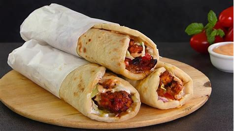

FRIED CHICKEN
Each country has its unique seasoning and preffered cut of chicken but the base flavour is still the same

SALAD
Your body can get much-needed fibers.Fibers job is to reduce cholestrol and aid digestion.It also makes you feel full and prevents you from
overeating